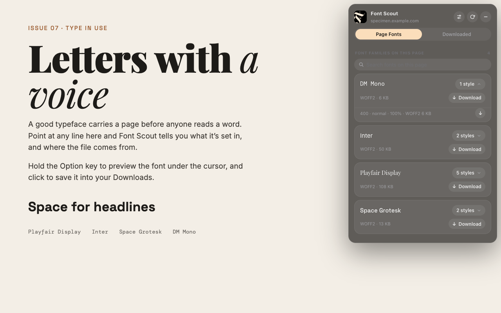

A closer look at type
Find the fonts
behind a page.
Inspect web fonts, preview the type under your cursor, and save available font files to Downloads.

From a letter to a library.
Open the Chrome extension to explore a page’s font families and styles. Hold Option on your Mac to inspect text, then save available web fonts with a click.
The optional Font Scout Mac app keeps a font library. When it is running, the extension marks matching fonts as “In Library”.
Download for Mac
macOS 14 or later. The Chrome Web Store listing is being prepared.
Your discoveries stay yours.
The extension processes font information locally, stores settings and recent diagnostic errors on your device, and has no analytics or advertising. It requests font resources from their hosting websites.
Check each font’s license before using it in your own work.